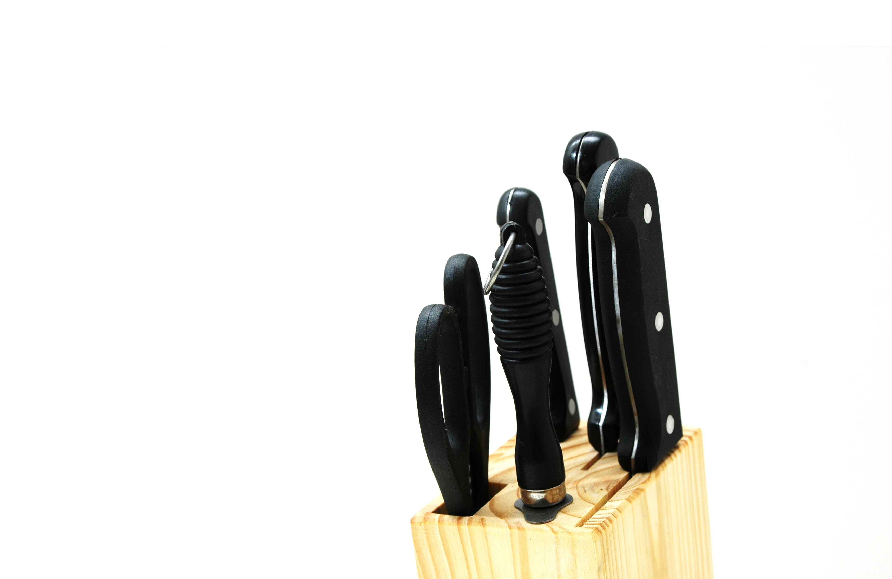

Keep Your Knives Sharp
Serious Eats Sweets Site Editor Carrie says that sharp knives are her jam. Having sharp knives is not only safer (your knife is less likely to slip off a vegetable and into your finger), but it just makes cooking so much more pleasurable when you can fly through your slicing, dicing, and chopping tasks.
For most home cooks, sharpening should be done once or twice a year. If you're up for the task, you can get yourself some stones and do it yourself, though most folks will opt to take their knives to a professional. Whatever you do, don't use those awful electric grinding machines which will strip off far more metal than is necessary, wearing your knife down and shortening its useful lifespan.Even with a sharp knife, you'll want to hone the blade by stroking it across a steel to align any microscopic dings and bends before each use.